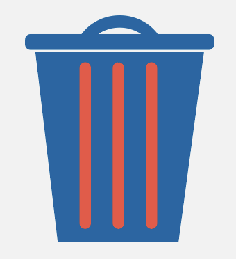
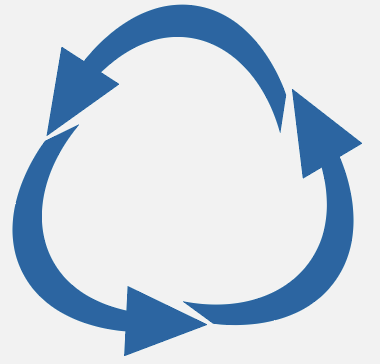

The Upcycle
Upcycling is een de populaire term om van oude spullen en materialen iets heel nieuws te maken. Dit zorgt voor minder vervuiling en meer duurzaamheid.
The Upcycle is een niet alleen een bedrijf die duurzame producten verkoopt maar ook workshops geeft om mensen te leren hoe ze zelf aan upcycling kunnen doen.

Minder afval
Upcycling verlengt de levensduur van materialen door ze opnieuw te gebruiken in plaats van ze weg te gooien. Hierdoor komt er minder afval op stortplaatsen terecht, wat helpt om de druk op ons afvalbeheersysteem te verminderen.
Minder grondstoffen
Door bestaande materialen opnieuw te gebruiken, wordt de vraag naar nieuwe grondstoffen verminderd. Dit bespaart natuurlijke hulpbronnen zoals hout, metalen en olie die nodig zijn om nieuwe producten te maken.
Creatieve hergebruik
Upcycling moedigt mensen aan om creatief om te gaan met afval en materialen, wat resulteert in unieke producten en een duurzame levensstijl. Dit bevordert ook bewustzijn over het belang van duurzaamheid en het verminderen van consumptie.
